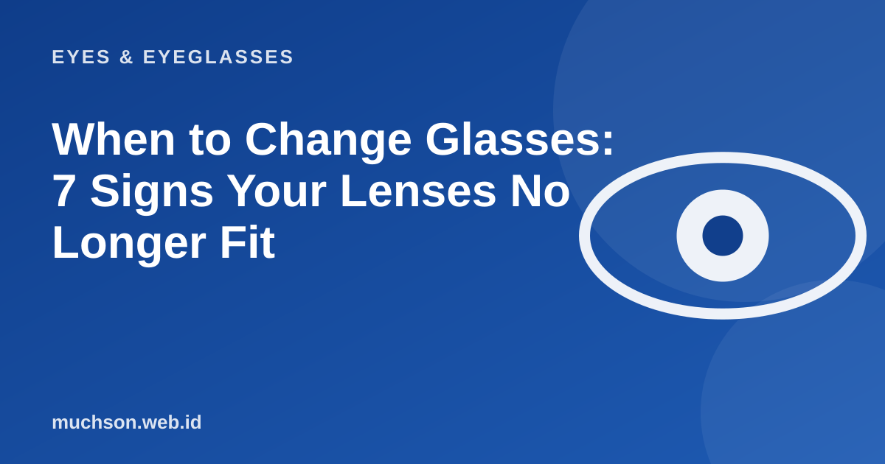

Home › Articles › Eyes & Eyeglasses
Eyes & EyeglassesWhen to Change Glasses: 7 Signs Your Lenses No Longer Fit
Eyes change slowly, so we often notice too late. Glasses that no longer match are not dangerous, but they make your eyes work harder and tire you faster.

Seven signs to watch for
Text description of the diagram
- Children & teens: Every 6-12 months. Myopia can increase as they grow.
- Young adults: About every 1 to 2 years. The prescription tends to be more stable.
- Age 40 and over: About once a year. Presbyopia and other eye conditions start to appear.
- A new complaint: Right away. Do not wait for the regular schedule.
Replace just the lenses, or the whole pair?
| Situation | A sensible action |
|---|---|
| The prescription changed, the frame is still good | Replace just the lenses and fit them in the old frame |
| The frame is bent, broken or uncomfortable | Replace the frame; the lenses may be reusable if the size matches |
| The lenses are badly scratched | Replace the lenses; consider a better coating |
| Both frame and lenses are old | Replace both for comfort |
Prepare before your exam
- Bring your old glasses and your previous prescription.
- Note your complaints: when they happen, at what distance, and while doing what.
- Tell the examiner your medical history, medicines you take, and your family history.
- Avoid wearing contact lenses for a few hours before the exam if asked.
Note
Tired eyes and dizziness that persist even when the prescription is right can have other causes. That is another reason to get checked, not only to replace your glasses.
FAQ
Are old glasses harmful to my eyes?
They do not cause permanent damage, but they can make your eyes tired and give you headaches. Less-than-optimal vision also affects safety, for example when driving.
How long can glasses be used?
There is no fixed limit. As long as the prescription still suits you and the lenses and frame are in good condition, they can last for years.
Can the prescription differ between optical shops?
It can differ slightly because of equipment and method. That is why results from the same doctor or optometrist are more consistent.